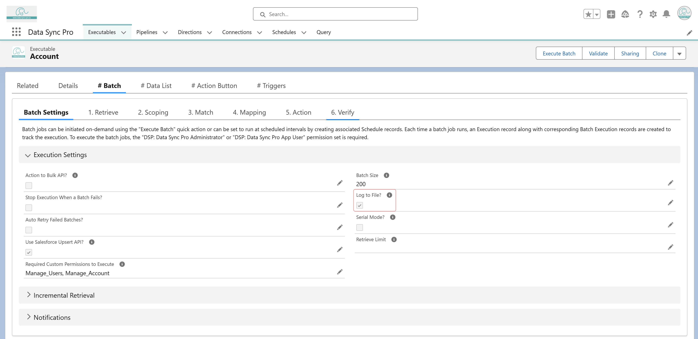

<article>
    <p>
      Yes, if <strong>"Log to File?"</strong> is enabled, the input data is logged in ContentDocument. 
      
      
      
      Navigate to the Execution record click <strong>"Re-Execute Failed Batches"</strong> to retry only the failed batches.
    </p>
  </article>
  